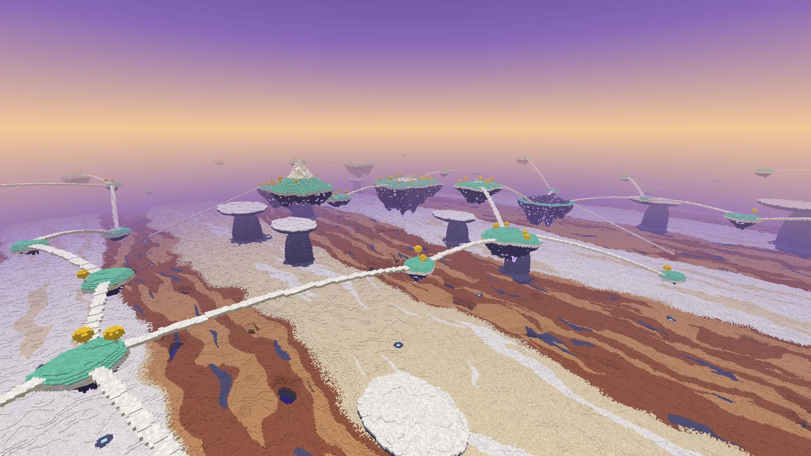
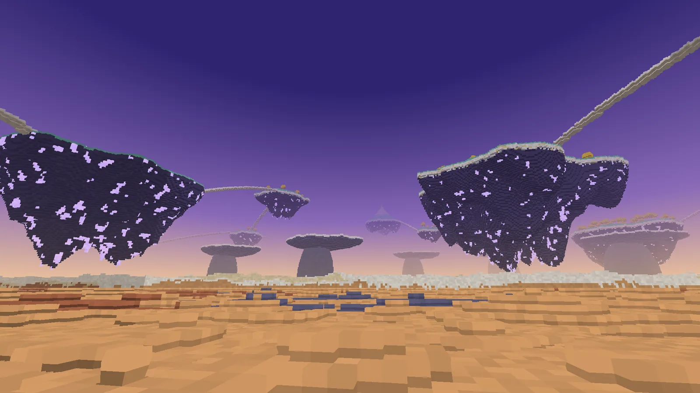
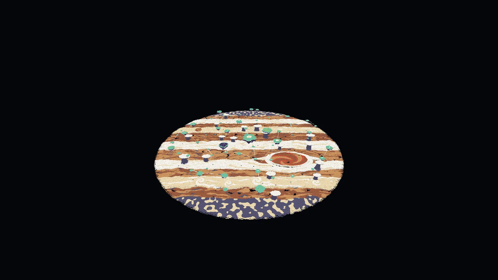
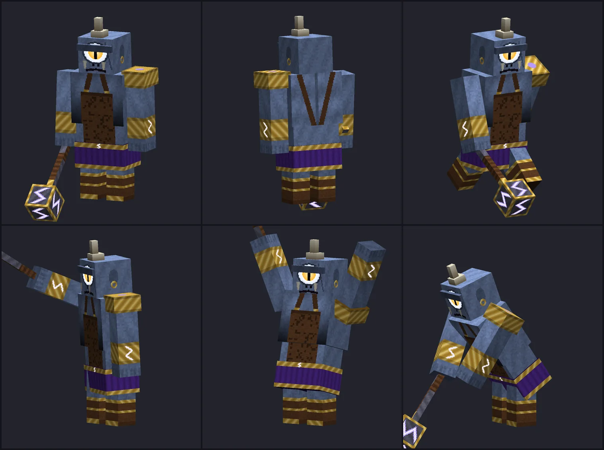
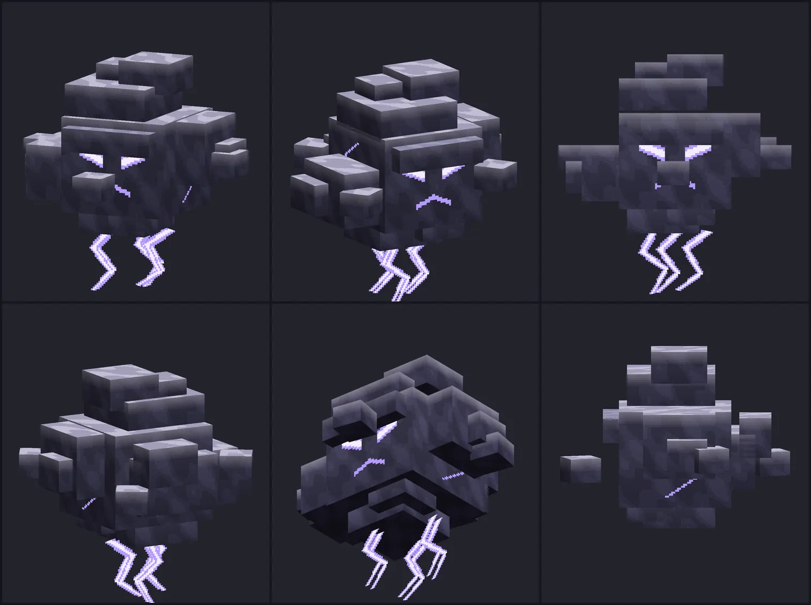

Planète
Jupiter, le royaume du ciel
La deuxième planète des dieux, et rien de commun avec Mars : ici il n'y a pas de sol. La touche divine de Jupiter ouvre la Voie de Jupiter, vers une mer de nuages de 2000 blocs de diamètre, la Grande Tache rouge, et au-dessus d'elles une soixantaine d'îles de marbre qui portent la kéraunite, la foudre figée.










Le voyage
- Les mêmes règles que pour Mars : une fois par jour de jeu, cinq minutes au plus, le compte à rebours en haut à gauche, les invités par [Rejoindre], la touche divine pour rentrer, aucune autre entrée. Le Rafale y est autorisé — et c'est le meilleur endroit du jeu pour s'en servir.
- L'arrivée : au Trône, au centre de la planète, dans un cercle de douze colonnes.
- Tomber : une chute sur une nuée ne fait aucun dégât, quelle que soit la hauteur. Tomber dans un trou de la mer de nuages, dans l'œil de la Tache ou par-dessus le bord vous ramène au Trône.
La planète
On y pèse comme sur Terre : les vents portent ce que la planète écrase. Elle est la même dans tous les mondes.
| Lieu | Où (x, z) | Ce qu'on y trouve |
|---|---|---|
| Le Trône | 0, 0 (Y 151) | L'arrivée : un cercle de douze colonnes sous leur anneau de marbre, le trône du roi du ciel, des lanternes de foudre. Aucune créature n'approche à moins de 36 blocs |
| La mer de nuages | partout, vers Y 60 | Des bandes comme celles de la vraie planète : zones blanches et crème, ceintures ocre et rousses plus basses de quelques blocs, percées de trous par endroits. On y marche |
| La Grande Tache rouge | 390, 300 | Un ovale de 400 blocs sur 250 : un col de nuée blanche, un mur, puis des terrasses vermeilles en spirale qui descendent de trente blocs vers un œil sans fond. Seul endroit où trouver la nuée vermeille |
| Le Belvédère | 296, 96 (Y 163) | Une terrasse et sa colonnade, tournées vers la Tache |
| La Forge des Cyclopes | -268, 124 (Y 128) | Une île sans marbre ni gazon : de la pierre d'orage à nu, deux fois plus riche en kéraunite que les autres |
| Le Bois d'or | 214, -186 (Y 138) | Une forêt de lauriers d'or |
| L'Aire | -124, -318 (Y 190) | Un piton plus haut que tout le reste, une lanterne à son sommet pour s'orienter |
| Les îles | 58 en tout | Du gazon céleste, quelques blocs de marbre, puis une quille de pierre d'orage hérissée de pointes dont le bout est en kéraunite. Certaines portent les ruines d'un petit temple |
| Les cumulonimbus | 17 | Une tour de nuée d'orage coiffée d'une enclume blanche. La foudre y tombe de temps à autre : elle ne blesse personne |
Se déplacer
- Les arches : chaque île est reliée à une autre par une arche de nuée, large de cinq blocs. Tout se rejoint à pied depuis le Trône.
- Les trois rampes : de la Forge (vers -478, 172), du Bois d'or (276, -448) et du Belvédère (118, 332, au bord de la Tache), une longue rampe descend jusqu'à la mer.
- Les évents de tempête : sous chaque île, sur la mer, un carré de trois blocs où tourne une spirale claire dans un rond de nuée sombre. Marchez dessus : le vent vous monte juste au-dessus de l'île, puis vous redescendez lentement pendant douze secondes — le temps de vous poser dessus. Accroupi, l'évent vous laisse passer.
- La Plume d'Aquila et le Rafale (voir plus bas, et son chapitre).
Les créatures
Deux créatures, et elles seules. Comme sur Mars, la planète les fait venir autour de chaque visiteur : jamais plus de quatre Cyclopes et six Nimbus à la fois, aucun en Paisible, aucun près du Trône.
| Créature | Vie | Dégâts | Ce qu'elle fait | Butin |
|---|---|---|---|---|
| Cyclope | 60 | 12 (marteau) 10 (onde) | L'un des forgerons de la foudre : un œil, deux fois la taille d'un homme, un marteau de forge. Il n'apparaît que sur les îles, dans un éclair. Toutes les 7,5 s, s'il est à moins de 4,5 blocs, il lève son marteau à deux mains — une seconde pendant laquelle il ne bouge pas : c'est le moment de s'écarter — et l'abat : tout ce qui est à 4,5 blocs est blessé et projeté en l'air. Armure 6, presque insensible au recul, insensible à la foudre. | 2 à 4 éclats de kéraunite |
| Nimbus | 24 | 5 (contact) 4 × 3 (étincelles) | Une nuée d'orage vivante. Elle flotte comme un Blaze, à distance ; elle gonfle et crépite pendant 1,5 s, puis lâche trois étincelles coup sur coup, et se repose 4,5 s. Les étincelles ne mettent le feu à rien. Insensible à la foudre et aux chutes. | 0 à 2 éclats de kéraunite |
Les blocs
| Bloc | Où | Outil |
|---|---|---|
| Nuées blanche, crème, ocre, rousse, vermeille, d'orage | La mer, les arches, la Tache, les cumulonimbus. On y marche ; une chute dessus ne fait aucun dégât, chez vous non plus | À la main |
| Évent de tempête | Sous chaque île ; se fabrique aussi. Posé chez vous, il monte de 24 blocs | À la main |
| Gazon céleste | Le dessus des îles | Pelle |
| Marbre céleste, Marbre veiné d'or | Sous le gazon, sur quatre à cinq blocs | Pioche |
| Pierre d'orage | La quille des îles | Pioche |
| Minerai de kéraunite | Dans la pierre d'orage : 6 % de la pierre, et le bout de chaque pointe sous les îles. Il brille | Pioche en fer |
| Bois, Feuilles et Planches de laurier d'or | Les lauriers des îles. Les feuilles ne tombent pas quand on coupe le tronc ; les planches servent partout où des planches servent | Hache ; houe |
| Marbre poli, briques, escalier, dalle, muret, marbre sculpté, colonne | Artisanat (ou tailleur de pierre) | Pioche |
| Bloc de kéraunite | 9 éclats ; base de balise ; lumière 12 | Pioche en fer |
| Lanterne de foudre | Artisanat ; lumière maximale | Pioche |
Le minerai donne 1 à 3 éclats, davantage avec la Fortune ; le Toucher de soie garde le minerai. La kéraunite ne se cuit pas : l'éclat se travaille tel quel. La planète ne donne aucune ressource de l'Overworld.
La Régalia du Tonnant
Rien d'un soldat : pas de casque, mais une couronne de laurier d'or qui laisse le visage nu, et derrière la tête un halo de foudre qui tourne ; une cuirasse d'ivoire sous l'égide, un col d'écailles d'or, barrée d'une écharpe violette, l'aigle sur la poitrine ; deux ailes dans le dos, repliées au repos, qui s'ouvrent quand vous courez ; un manteau jeté sur le bras gauche ; un pagne blanc plissé ; des cothurnes lacés d'or. Ce qui est foudre brille dans le noir.
| Pièce | Armure | Durabilité | Recette |
|---|---|---|---|
| Laurier du Tonnant | 3 | 418 | Artisanat : 3 feuilles de laurier d'or en haut, 2 éclats dessous (aux coins) |
| Égide du Tonnant | 8 | 608 | Butin des créatures de Jupiter : aucune recette |
| Tassettes du Tonnant | 6 | 570 | Artisanat : 7 éclats, en jambières |
| Cothurnes du Tonnant | 3 | 494 | 4 éclats, en bottes |
Chaque pièce : robustesse 3, résistance au recul 10 %, insensible au feu, très enchantable, réparable à l'éclat. Les quatre portées ensemble : +20 % de vitesse, aucun dégât de chute, insensible à la foudre.
L'égide et les cothurnes ne se fabriquent pas : un Cyclope ou un Nimbus tué par un joueur a 5 % de chances de laisser l'un des deux, au hasard. Le laurier, les tassettes et la foudre se fabriquent.
La Foudre de Jupiter, la Plume d'Aquila
kéraunite
kéraunite
kéraunite
Foudre de Jupiter
9 dégâts, 1,8 coup par seconde, 2000 de durabilité. Clic droit : la foudre tombe là où vous regardez, jusqu'à 48 blocs — tout ce qui est hostile à 3 blocs du point d'impact subit 16 dégâts. 5 secondes de recharge. Elle ne met le feu à rien et ne touche ni les joueurs ni les animaux apprivoisés. Viser le ciel vide ne lance rien.
kéraunite
laurier d'or
laurier d'or
kéraunite
Plume d'Aquila
Clic droit : le vent vous emporte à vingt blocs de haut, un peu dans la direction du regard, puis vous redescendez lentement pendant dix secondes. 15 secondes de recharge. Ne s'use pas.
veiné d'or
kéraunite
veiné d'or
Lanterne de foudre
Un éclat de foudre dans une cage d'or. Lumière 15.
d'orage
d'orage
kéraunite
d'orage
d'orage
Évent de tempête
Marchez dessus : le vent vous monte de 24 blocs, puis vous redescendez lentement. Accroupi, il vous laisse passer.